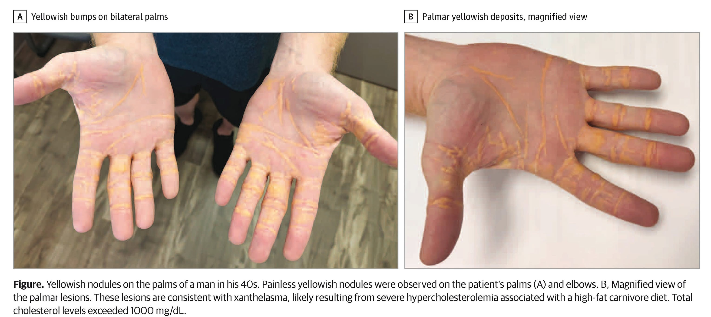

The carnivore diet means eating only animal foods, usually beef, other meat, eggs and sometimes dairy, with essentially no plants. It is promoted online as a cure-all for weight, diabetes, inflammation and more. This article summarizes what the group's posts say about it, almost all of which come from the admins' critical perspective. They are open that the key evidence they would want, long-term trials and outcome data, does not exist.12
The short version is this. In the short term, people often lose weight and some lab numbers improve, but the group argues that this reflects weight loss rather than anything special about meat.34 The main heart concern is LDL cholesterol and ApoB, which can rise very high on all-meat and keto diets, and the admins collect cases of heart attacks, strokes and bypass surgery in long-term followers.5678 Whether the diet is safe for decades is, in Louis Nervegna's words, "legitimate uncertainty".2
Please read the stories below as anecdotes, not proof. They show what can happen, not how often it happens.
What people claim, and what the group says about each claim
"It reverses diabetes and insulin resistance"
Louis argues that people on carnivore or keto who truly reverse diabetes and insulin resistance lose a lot of weight and clear fat from the liver and pancreas. In his view the same happens on a whole-food plant-based vegan diet, a "rice diet", a "sugar diet" or GLP-1 drugs, so nothing is special about meat.3 He points to Roy Taylor's randomized trial, in which an 8-week very low calorie liquid diet cleared liver and pancreas fat, and describes an average loss of about 15 kg (33 lb) as what was needed to clear that fat. Participants then moved to a normal-calorie Mediterranean-style diet to maintain it.11 He also shares the "Twinkie diet" story, in which a nutrition professor lost 27 lb in 10 weeks on junk food while keeping calories under 1,800 a day.14
"My inflammation marker fell"
When someone on carnivore or keto reports a big drop in hsCRP (a blood marker of inflammation), Louis says they usually lost a lot of weight and cleared liver fat, which removes insulin resistance and lowers hsCRP. Vegans see the same effect with the same weight loss, which he takes as evidence that the shared factor is weight loss.4
"My fasting insulin is almost zero, so I am metabolically perfect"
Louis explains that with very high protein and near-zero carbohydrate, the body keeps fasting insulin very low and glucagon high so the liver can make glucose from protein. This can even resemble pancreatic insufficiency on lab reports, and he says it reflects a survival mechanism and not better metabolic health. He adds that fasting insulin normalizes once a little carbohydrate is added back.15 The post includes an AI chatbot's fact-check agreeing with the physiology, which is not independent evidence.15
"Ketosis proves we evolved as carnivores"
Louis disputes this on several grounds. All primates can enter ketosis as a starvation defense, even though they eat little meat. He also says that most people on carnivore diets are not actually in ketosis, because the large amount of protein is converted into glucose by the liver and animal protein raises insulin, and that ketosis generally requires about 60 to 65% of calories from fat.16 This is his claim and not a measured finding.
"Hunter-gatherers and traditional diets were all meat"
The posts push back with several lines of evidence:
- The Hadza. Louis describes the Hadza as eating about 70% of calories from plants (tubers, berries, baobab fruit), plus honey and lean game, with an average LDL of 62 mg/dL and a gut microbiome typical of high-fiber plant eaters (from a 2014 Nature Communications study).1017
- LDL ranges in nature. A review quoted in the group states that normal LDL is 50 to 70 mg/dL in native hunter-gatherers, healthy newborns, free-living primates and wild mammals, none of whom develop atherosclerosis. It also states that randomized trials show disease progression and coronary events are minimized when LDL is lowered below 70 mg/dL with no major safety concerns.18
- Paleolithic evolution. Louis cites anthropologist Richard Wrangham's argument that cooked starchy tubers and roots, a reliable source of glucose for the brain, were staples of early human diets.19 He also shares an AI-generated summary (not a cited literature review) listing plant remains in fossil feces, grinding stones, omnivore teeth, mixed isotope signals and hunter-gatherer ethnography as signs that Paleolithic people were omnivores.20
- Long-lived populations. Louis says he cannot find any population with many people living to 90 or 100 that ate a diet devoid of carbohydrate, and that the few near-zero-carb groups, such as certain Eskimo populations, were not particularly long-lived.12 He notes that Hong Kong, with an average life expectancy he gives as 86 years, has a diet led by cereal grains (491 g per day), then vegetables (177 g), fruit (147 g), meat and poultry (113 g) and fish (71 g), though this is an ecological observation and not a controlled comparison.21
- Height and lifespan. Louis also argues that taller people tend to live shorter lives and have higher cancer risk, in response to a carnivore influencer's claims about nutrition and height. That post does not cite studies.2223

The heart-health concern: LDL and ApoB
What influencers say about LDL, and what Louis says is wrong
Louis posted a fact-check of common keto and carnivore claims. In his summary:
- It is true that ApoB (the count of cholesterol-carrying particles) is a better risk marker than LDL-C, and ApoB is the best lipid test. LDL-C usually tracks ApoB, so most people with high LDL-C also have high ApoB.8
- It is not true that large "fluffy" LDL is harmless: many studies show particle size does not matter once the total number of particles is accounted for.8
- Most saturated fats raise LDL-P, ApoB and LDL-C. Studies finding saturated fat neutral generally used a standard Western diet as the comparison; against healthier foods the high-quality studies mostly show saturated fat raises cardiovascular risk.8
- HDL, in his view, is mostly a proxy for insulin resistance and metabolic syndrome and does not directly protect.8
- Louis also points out an inconsistency: some influencers deny that LDL and ApoB cause heart disease but accept Lp(a) and triglycerides, though both are carried on ApoB-containing particles.24
Why LDL can go so high in lean people on all-meat diets
Louis offers a hypothesis, labeled as such in the posts, that very lean people on strict keto or carnivore diets, especially when combined with fasting and intense exercise, can trigger a starvation-like response. In that state circulating LDL rises to carry fat as fuel, leptin falls (which slows LDL clearance), and thyroid and sex hormones fall. He says this "lean mass hyper-responder" (LMHR) pattern is more common with the ApoE4 gene and can reach LDL-C values of 500 or even 1,000 mg/dL. He links a 1999 Journal of Nutrition study showing that fasting raised total cholesterol, LDL-C and ApoB in healthy non-obese people.2526
He also says prolonged very low-carb eating can lower thyroid hormones (T3 and T4) while TSH looks normal or low, which can mislead doctors. He presents this as his opinion with no cited study.27
Real examples of high LDL
- A 35-year-old chiropractor, lean and muscular with a calcium score of 0, had a major heart attack with LDL of 372 mg/dL that Louis attributes to a carnivore/keto diet; the man does not have familial hypercholesterolemia and reportedly continued the diet.5 A calcium score of 0 does not rule out soft plaque.5
- Nick Norwitz, a keto/carnivore promoter, said in a video that his LDL cholesterol had reached 574 mg/dL, with total cholesterol of 705 mg/dL, while not on statins and without familial hypercholesterolemia according to the video.9
- Skin signs of high lipids have been reported: a JAMA Cardiology case report of yellowish cholesterol nodules on the palms and elbows (described in the report as xanthelasma) in a man in his 40s eight months after starting carnivore, with total cholesterol above 1,000 mg/dL, and a dermatologist's video on xanthomas on this diet.2829

What imaging shows: KETO-CTA
The best imaging data connected to this question come from KETO-CTA, a one-year study of lean, metabolically healthy people on keto with very high LDL. It was not a carnivore-only study, but the group links the two because carnivore-style eating can produce the same kind of LDL rise.1230 Louis's summary of the results:
- Total plaque volume rose 0.8% on average in one year.12
- In people with a baseline calcium score above 100 it rose 2.4%, and in those with a 10-year risk above 5% it rose 1.4%.12
- Louis compares it with a standard-diet group (Nature-CT), with the same scanners, software, average age of 55 and principal investigator, and reports 3.8 times faster soft-plaque progression in the keto group.830
Caveats from the posts themselves. Gokhan Can notes that the study had no low-LDL control group and compared high with very high LDL.31 After the paper was criticized, the data were re-analysed with different software, and Louis says the progression then became roughly equivalent to that of the standard American diet group, which he still calls a poor result because about one in five Americans on that diet have a heart attack in their lifetime. He also notes both studies would need to be re-analysed with the same software for a fair comparison.30 Louis also argued that the paper should stay published because the data were valuable and the methodology sound, while the write-up had serious flaws.32
Gokhan's takeaway is that looking and feeling great does not rule out silent plaque; he recommends following LDL and ApoB.13 Another example he mentions is a man who had 5 years of keto and 5 of carnivore and ended up with a 95% blockage of the left anterior descending artery (the "widowmaker").613
Cardiovascular events reported by carnivore followers
The admins have collected stories that, again, are anecdotes and not controlled evidence:
- A man who ate keto for 5 years and then carnivore for 5 had a 95% blockage of his widowmaker artery, was alerted by an Apple Watch to rhythm disturbances and needed open-heart surgery. Louis says carnivore influencers he followed did not respond to his requests for help.6
- Louis says he keeps a list of five carnivore influencers who had a heart attack, stroke or open-heart surgery after a significant time on the diet, one of them with a stroke after over 2.5 years.7
- A former carnivore YouTuber described a stroke after paleo, keto and then carnivore diets and now follows the Esselstyn plant-based diet under his care.33
- A long-time strict carnivore advocate reportedly found significant blockages in all three coronary arteries and a calcium score that rose from 700 to 800 after 15 years, along with acute colitis, and later added seafood; Louis says his plaque progression was worse than some of the fastest progressors in KETO-CTA.3435
- A forum report of a second heart attack on carnivore, and a man with a family history of heart disease and high LDL who avoided medication and developed heart disease.3637
An orthopedic surgeon who lost 43 lb on carnivore and plans to continue still urges others not to ignore their LDL, especially with a family history of heart disease. He calls the diet "physiologically extreme" and says of the long-term risks, "we just don't know".38
Other risks mentioned in the posts
- Scurvy. A case report described a man eating mainly canned beef with almost no fresh produce who developed classic scurvy and recovered within weeks on vitamin C 500 mg twice daily. Louis notes that vitamin C needs vary and fresh meat may not be enough for everyone.39
- Gut effects. A shared post argues a meat-only diet can reduce fiber-fed gut bacteria and promote gut inflammation, citing a carnivore advocate's colitis. This is a commentary, not a study.34
- Processed meat. Louis criticizes an influencer's claim that hot dogs are healthy, saying processed meat has among the worst hazard ratios of any food category and that even "natural" celery-cured versions contain nitrosamines. He links Harvard Chan School pages on processed meats and the WHO's classification.40
- Thyroid. See the opinion above on suppressed T3 and T4 during prolonged very low-carb eating.27
Nuances and fair points
- Short-term benefits are real. Louis does not dispute that low-carb diets such as keto are probably safe and possibly beneficial in the short term, and mentions epilepsy as the classic therapeutic use. He says the issue is the unknown long-term effect.12
- Weight loss is the common thread. Many reported benefits are attributed to weight loss, which can happen on very different diets.3411
- Not every low-carb eater is a carnivore. Gokhan Can describes himself as pro-keto for stretches of 3 to 12 months, alternating with Mediterranean eating, and says he does not do carnivore and keeps his LDL controlled with low-dose rosuvastatin.3141
- Extremes cut both ways. Louis also criticizes the opposite extreme, a roughly 90% starch diet promoted by John McDougall, saying neither extreme is backed by credible evidence.42
- The "healthy glycocalyx" argument. A shared post disputes the claim popular among keto and carnivore advocates that metabolically healthy people are protected from very high LDL by the glycocalyx, the gel-like layer lining blood vessels. It argues that protection is not uniform, for example where blood flow is disturbed at branches. Louis recommends it as a good discussion of the limits of that protection.43
- Group perspective. Louis's posts are often sharply worded and opinionated, and many cited items are anecdotes or his own reasoning. The group's strongest numerical evidence concerns keto LMHRs and not carnivore dieters specifically.1230
What this means for you
These are views expressed in the group and are not personal medical advice. The admins recommend discussing your diet and lipid results with your own doctor.
- Measure, do not guess. Gokhan's advice is to follow LDL and ApoB and not to rely on how you look or feel.13 The orthopedic surgeon above gives the same advice, especially with a family history.38
- Ask which lipid test to use. According to Louis, ApoB is the best single lipid test, and LDL-C usually tracks it.8
- Do not treat a calcium score of 0 as full reassurance. It can coexist with soft plaque, as in the 35-year-old's case.5
- If you want low-carb, keep some carbohydrate. Louis suggests low-glycemic carbohydrate from non-starchy vegetables, legumes and low-sugar fruit such as berries, plus nuts, seeds and fermented dairy.1
- Consider the micronutrients. The scurvy report is a reminder that a limited diet can leave gaps.39
- Do not take social media as medical advice. A shared commentary on one man's story urges people to talk to their doctor, and Louis says carnivore influencers did not respond to followers who developed heart problems.63337
Frequently asked questions
Is the carnivore diet proven to cause heart disease?
No trial has tested it for decades, so no one can say. What the group offers is a mix of anecdotes, the mechanism of LDL and ApoB rising on high-saturated-fat diets, and keto imaging data showing plaque growth in lean people with very high LDL.2812
Will I definitely get very high LDL on carnivore?
Not necessarily, but some people do. Louis describes the extreme "lean mass hyper-responder" pattern as more common in very lean people on strict diets, and the posts describe LDL of 372 and 574 mg/dL in individual cases.5925 Checking LDL and ApoB is the only way to know where you stand.13
Does carnivore cure diabetes or lower inflammation?
Louis's position is that any diet can do so if it produces enough weight loss to clear liver and pancreas fat, and that the same drop in hsCRP occurs on vegan diets.3411
Were humans meant to eat only meat?
The posts say no: Paleolithic humans were omnivores relying heavily on cooked starchy tubers, the Hadza eat about 70% plants and have an LDL of 62 mg/dL, and ketosis is a starvation defense shared by all primates.101619
Are there any long-lived carnivore populations?
Louis says he has found none among long-lived populations, and invites readers to name a counter-example.12